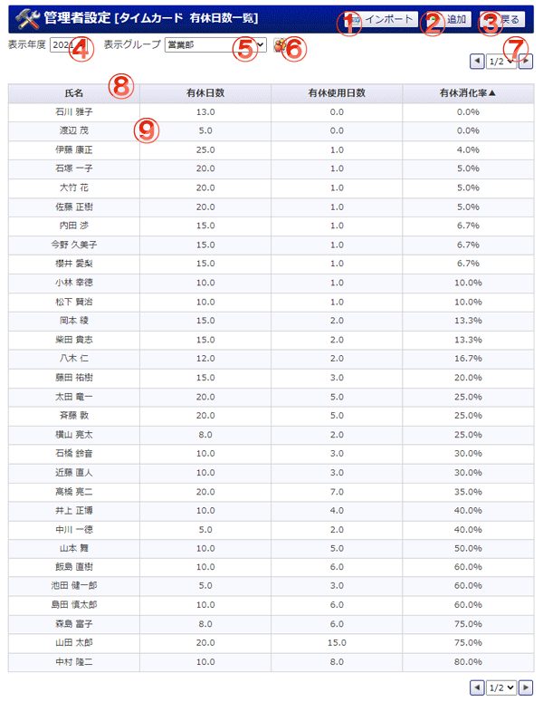

全ユーザの有休日数一覧を閲覧できます。

機能説明
インポートボタンタイムカード 管理者設定 有休日数インポート画面へ遷移します。 |
追加ボタンタイムカード 管理者設定 有休日数登録画面へ遷移します。 |
|---|---|
戻るボタン遷移元の画面へ遷移します。 |
年度コンボ年度がコンボに表示されます。 |
グループコンボ選択したグループに所属するユーザがユーザコンボに表示されます。 |
グループボタンポップアップでグループ選択画面が開きます。 |
ページコンボページ数がコンボに表示されます。 |
一覧ヘッダ部各項目ごとに一覧表示を昇順・降順に切り替えできます。 |
ユーザ 有休日数情報タイムカード 管理者設定 有休日数編集画面へ遷移します。 |
表示・入力項目説明
氏名
ユーザ名を表示します。
有休日数
ユーザ毎の有休日数を表示します。
有休使用日数
ユーザ毎の有休を使用した日数を表示します。
有休消化率
ユーザ毎の有休の消化割合を表示します。